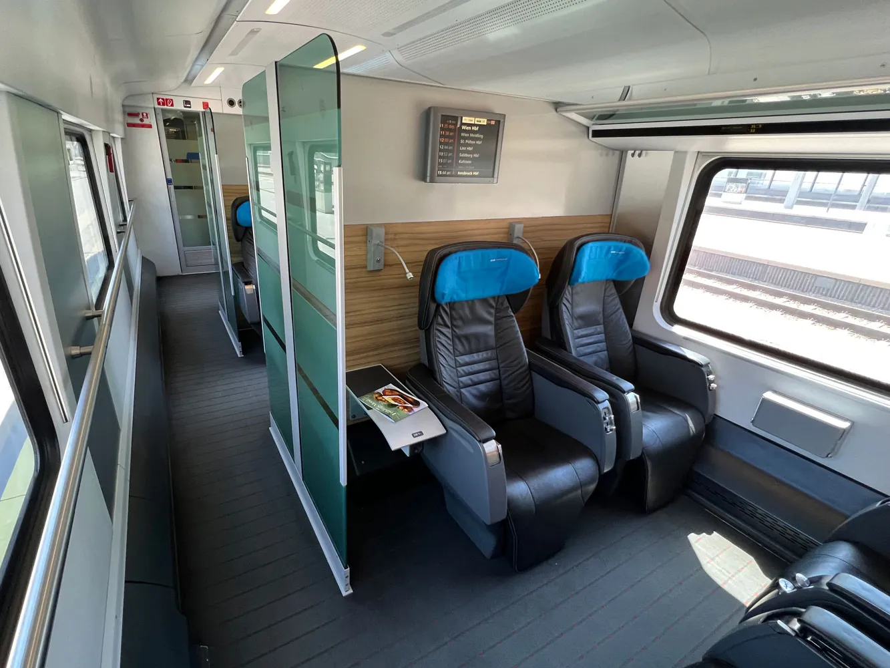
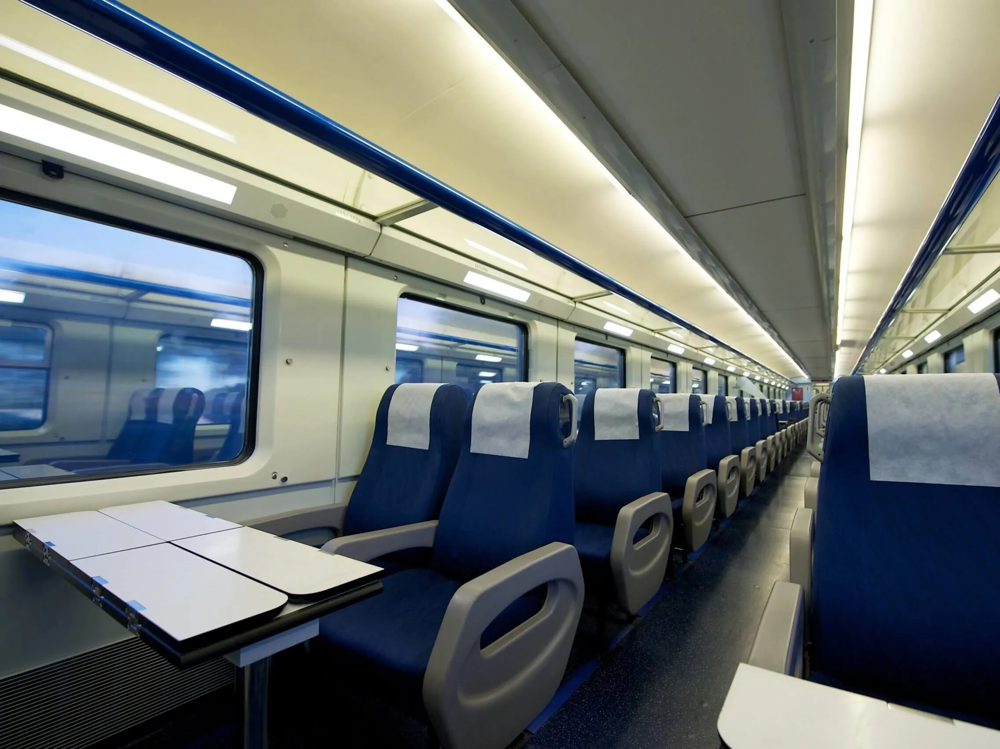
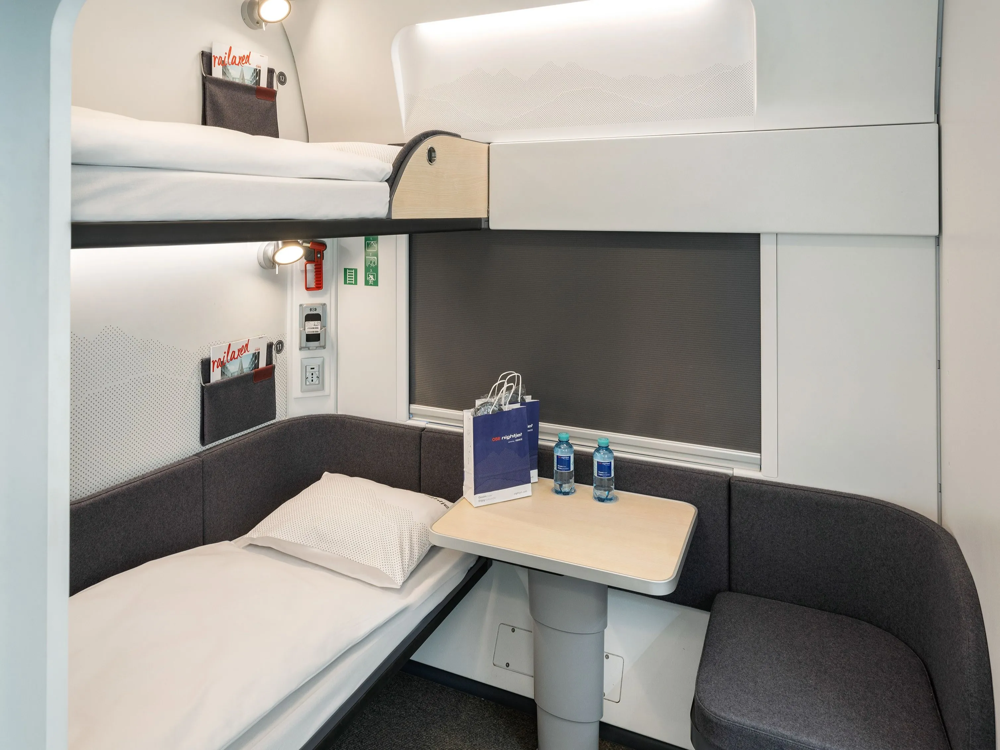

Trasee
Anunțuri
Stimați călători,
Vă informăm că trenurile SR201 și SR202 (ruta București - Cluj-Napoca - Budapesta),
respectiv SR301 și SR302 (ruta Budapesta - Cluj-Napoca - București)
nu vor circula în perioada 17.05.2025 - 18.05.2025 datorită unor defecțiuni tehnice.
Ne cerem scuze pentru inconveniențe!
Stimați călători,
Vă informăm că trenul SR305 (ruta Budapesta - Bratislava - Varșovia)
de astăzi, 16.05.2025, se va opri pentru o oră în Břeclav pentru efectuarea unor reparații.
Ne cerem scuze pentru inconveniențe!
Servicii
SwiftRail vă pune la dispoziție 3 clase de confort pentru o experiență pe bunul plac al tuturor, la prețuri accesibile:
| Premium | Economic | Night |
|---|---|---|
|
|
|
|  |
 |
 |
| Premium |
|---|
|
| Economic |
|---|
|
| Night |
|---|
|
Întrebări frecvente
| De unde pot cumpăra un bilet? |
| Biletele se pot achiziționa de la casele de bilete din gările noastre partenere sau contactându-ne printr-un apel telefonic. |
| Cu cât timp în avans pot cumpăra un bilet? |
| Biletele sunt disponibile cu până la 6 luni în avans, în funcție de ruta aleasă și de partenerii internaționali. |
| Sunt necesare documente speciale pentru călătoriile internaționale? |
| Da, este necesar un act de identitate valabil. Pentru unele țări, este posibil să aveți nevoie de pașaport sau viză, în funcție de cetățenia dumneavoastră. Vă rugăm să consultați reglementările specifice fiecărei țări în care plănuiți să călătoriți! |
| Pot călători cu un permis Interrail? |
| Da, acceptăm aceste tipuri de abonamente pe toate rutele. Este posibil să fie nevoie de rezervare suplimentară pentru loc. |
| Pot călători cu bicicleta? |
| Da, bicicletele sunt permise în toate trenurile, dar trebuie lăsate în locul special amenajat pe parcursul călătoriei. |
| Sunt permise animalele de companie? |
| Da, animalele mici sunt permise în cușcă, gratuit. Pentru câinii mari este necesar un bilet separat și botniță. |
| Ce fac dacă trenul meu întârzie? |
| În această situație vă rugăm să nu vă panicațî, să consultați secțiunea Anunțuri de pe site-ul nostru sau să ne contactați pentru explicații. În cazul întârzierilor de peste 60 de minute, puteți solicita rambursarea parțială a biletului prin e-mail. |
| Ce facilități sunt disponibile pentru persoanele cu mobilitate redusă? |
| Trenurile noastre sunt echipate pentru a oferi acces facil persoanelor cu dizabilități. Vă recomandăm să ne anunțați în avans pentru asistență personalizată. |
Despre noi
-
Ce este SwiftRail?
SwiftRail este un operator feroviar internațional privat dedicat conectării Sud-Estului Europei cu inima continentului - Europa Centrală - prin servicii moderne, rapide și sustenabile.
Misiunea noastră este simplă, dar ambițioasă: să oferim o alternativă de transport sigură, confortabilă și prietenoasă cu mediul, pentru toți cei care doresc să călătorească eficient peste granițe.
-
Conectăm Europa, protejând planeta
Într-o lume în continuă mișcare, credem că mobilitatea nu trebuie să vină în detrimentul mediului.
De aceea, toate trenurile noastre sunt 100% electrice, alimentate din surse de energie verde acolo unde este posibil.
Investim constant în tehnologii de ultimă generație pentru a reduce amprenta de carbon și pentru a transforma călătoria cu trenul în cea mai ecologică opțiune de transport internațional.
-
Modern. Rapid. Confortabil.
Trenurile SwiftRail sunt gândite pentru a oferi o experiență de călătorie fluidă, fie că mergeți din Balcani spre Viena, Budapesta sau Berlin, fie că veniți din Europa Centrală spre orașe-cheie din Sud-Estul Europei.
Cu conexiuni inteligente, Wi-Fi la bord, spații ergonomice și servicii adaptate călătorilor moderni, transformăm fiecare drum într-o destinație în sine.